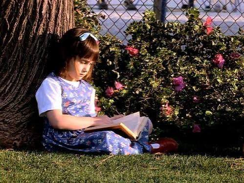

Por qual motivo devemos incentivar a Leitura?
Muitas pessoas não possuem acesso facilitado a livros físicos devido ao alto custo. Ao mesmo tempo, diversas famílias possuem livros parados nas estantes pegando poeira.

Segundo a pesquisa recente do IBGE:
A leitura transforma o pensamento crítico e expande as oportunidades de cidadania.— Pesquisa Retratos da Leitura no Brasil
Para saber mais sobre projetos nacionais de incentivo, acesse o site do Ministério da Cultura.